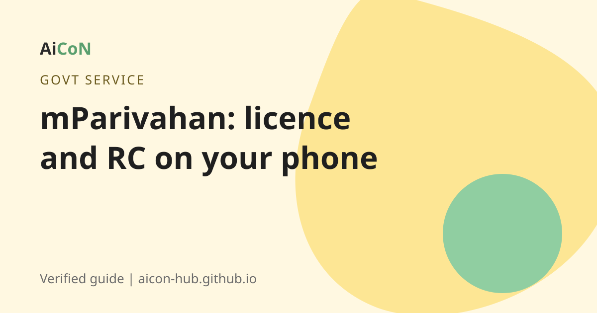

mParivahan app: show your driving licence and RC on your phone
mParivahan is the Ministry of Road Transport and Highways (MoRTH) app. It can pull your driving licence and vehicle RC in electronic form. A government circular says these records are valid like the originals.

What is mParivahan?
mParivahan is the mobile app of the Ministry of Road Transport and Highways. The official website is mparivahan.parivahan.gov.in. The site lists e-challan coverage for many states, and Kerala is on that list.
Are digital documents valid?
Yes, according to a MoRTH circular dated 8 August 2018, hosted on the DigiLocker site. It says people complained that documents in DigiLocker or mParivahan were not accepted by traffic police or motor vehicle departments. The Ministry explained that the electronic records on DigiLocker and mParivahan are legally recognised at par with the original documents under the Information Technology Act, 2000. It asked all states and traffic police to accept them.
The 17 December 2018 MoRTH advisory also quotes the amended Rule 139 and explains electronic production of registration, insurance, fitness, permit, driving licence, PUC and other relevant documents. This guide now cites both the original circular and that later advisory.
How to use it, step by step
- Install the app only from Google Play or the App Store. Check the publisher is the Ministry of Road Transport and Highways or NIC.
- Register with your mobile number and OTP.
- Add your driving licence: enter the licence number and date of birth.
- Add your vehicle: enter the registration number. The RC appears in the app.
- You can also search any vehicle or licence number to see details the system shows publicly. Use this to check a used vehicle before you buy.
- At a traffic check, show the digital DL and RC on the app or DigiLocker.
Menus can change between app versions. Look for "Virtual DL" and "Virtual RC" style options.
Paying a traffic fine (challan)
Check and pay challans only on the official e-challan portal, echallan.parivahan.gov.in, or in the app. Fake e-challan sites collect money for fines that do not exist. Look for the parivahan.gov.in ending.
Buying a used vehicle?
Look up the registration number and compare the owner, insurance and fitness details with what the seller says. This does not replace a proper transfer process at the RTO.
Cost, eligibility and limits
| Price | Free to download and use. |
|---|---|
| Who can use it | Any licence holder or vehicle owner in India. |
| Needs | A mobile number linked to your licence or RC records for the OTP. |
| Limits | Some details only show if your state has put the data online. If the virtual copy or updated validity status is unavailable, the official advisory says to carry the relevant paper documents. |
Stay safe
- Use only parivahan.gov.in sites and the official app.
- Officials never ask for OTPs or payment links on calls or messages.
- Do not pay a challan through a link sent by SMS without checking the site name.
Frequently asked questions
Is a digital driving licence valid in Kerala?
The MoRTH circular asked all states and traffic police to accept electronic DL and RC from DigiLocker and mParivahan.
Is mParivahan free?
Yes.
Is mParivahan the same as DigiLocker?
No. Both can show your DL and RC. See our DigiLocker guide.
Can I check someone else's vehicle?
You can look up a registration number to see the public details the system shows.
How do I pay a challan?
On echallan.parivahan.gov.in or in the official app.
Offline QR verification and missing documents
For a used vehicle, public registration details are only one check. This guide did not establish a complete accident, service, loan or ownership-history record. Verify title, finance, condition and the actual RTO transfer separately before paying. No vehicle lookup or challan payment was performed.
The MoRTH advisory dated 17 December 2018 describes offline verification of an mParivahan document QR code through the eChallan app. That is a specific enforcement verification route, not proof that every public lookup or live status works offline. It also says relevant paper documents are required if the virtual copy or updated validity status is unavailable in mParivahan or DigiLocker.
Sources: mParivahan, MoRTH circular, 8 Aug 2018. Checked 6 October 2026. · MoRTH 17 December 2018 advisory. QR and paper-document limits checked 7 October 2026.